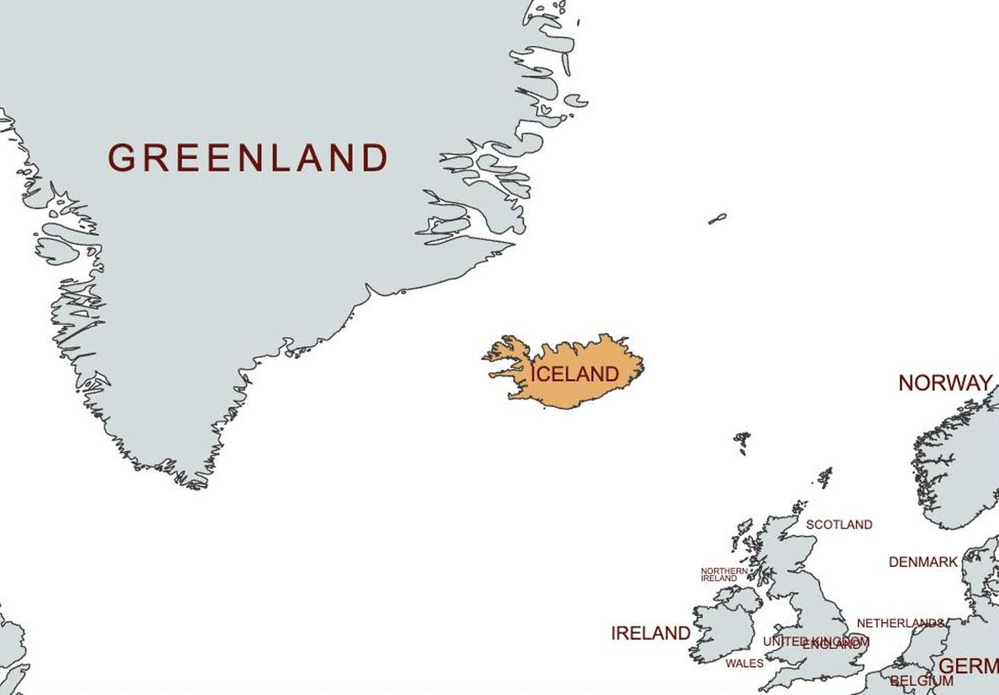
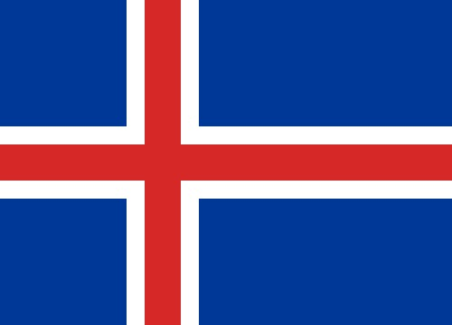
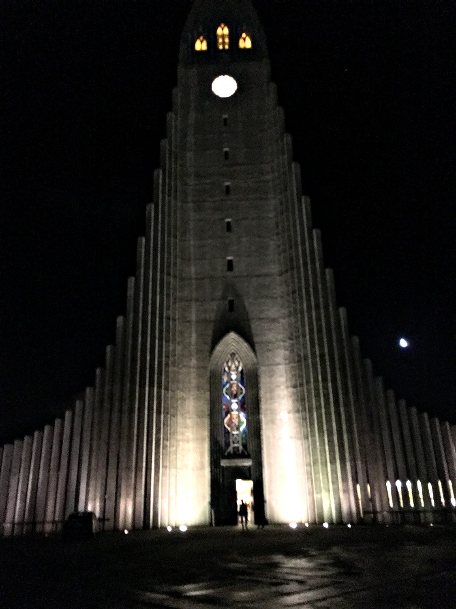
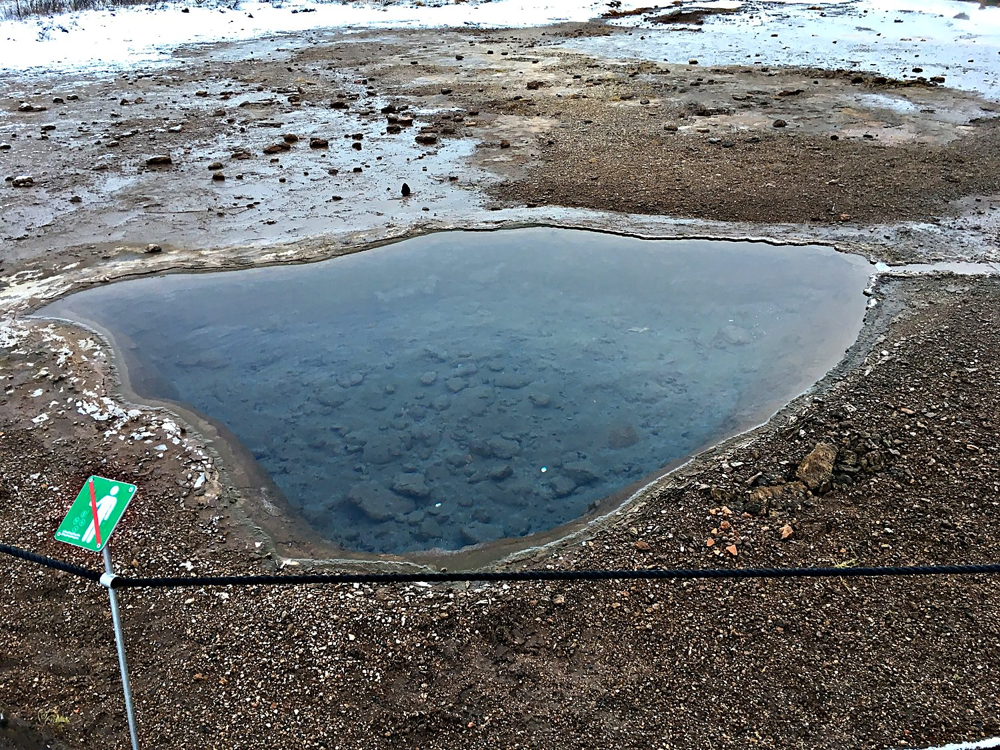
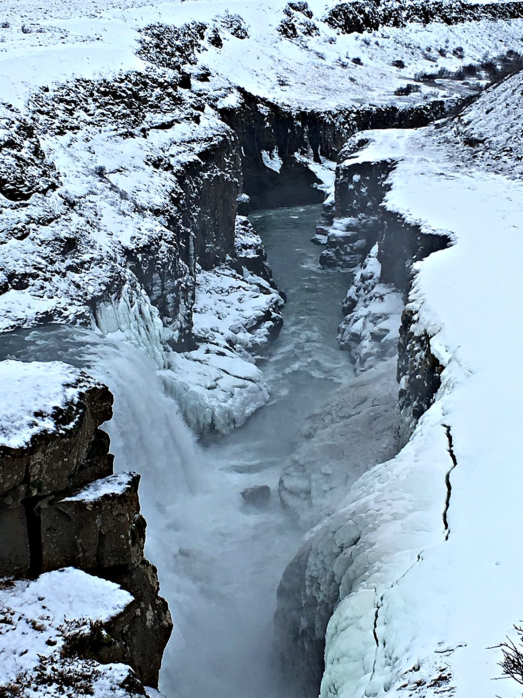

I visited Iceland with my friend Wren in January 2018, a month when the sun clocked in for barely five hours a day before dozing off again. The country was so eye-wateringly expensive that we survived almost entirely on supermarket groceries, splurging on a single restaurant meal the entire trip. We made an eerie pre-dawn pilgrimage to the great church of Hallgrímskirkja, looming ghostly in the darkness, and devoted a full day to the classic Golden Circle route. My personal highlight was a soak in a geothermal bath, where I lay motionless and lethargic for the better part of an hour, warm at last despite the cold Arctic winter.
Reykjavik is the northernmost capital of any sovereign state, a small and colourful city perched at the edge of the habitable world. Despite its modest size, it is home to the majority of Iceland's tiny population of around 300,000 people. In January it is a place of long blue twilights and short, precious windows of daylight, its streets dusted with snow and its harbour ringed by white mountains. For all its remoteness, it is cozy and creative, a fitting base from which to explore one of the most geologically dramatic countries on the planet. I was surprised that despite being just south of the Arctic Circle, it was barely colder than New York. This is because of the Gulf Stream current which warms Iceland along with much of Western Europe.

Iceland was settled remarkably late around 874 AD by Norse seafarers, the Vikings who sailed west in search of new land. In 930 those settlers founded the Althing, a national assembly that is often counted among the oldest parliaments in the world. The island later fell under Norwegian and then Danish rule for many centuries. Iceland was invaded by the UK in 1940 to prevent Germany from gaining control of the vital North Atlantic shipping route. This military operation was a bloodless affair, where the only casualty was a suicide, and though the Icelandic people grumbled, life went on as usual pretty much immediately. Towards the end of the war in 1944, Iceland became a fully independent republic. Through all of it, Icelanders preserved their language and their extraordinary medieval sagas, which remain among the treasures of world literature.

Iceland's real ruler, though, is geology. The island sits astride the Mid-Atlantic Ridge, the seam where the North American and Eurasian tectonic plates are slowly pulling apart, and it is one of the most volcanically active places on earth. This is the fabled land of fire and ice, where glaciers and volcanoes share the same horizon. All that heat is a gift as well as a hazard, since it is used to power Iceland’s electric grid. The flag reflects the landscape itself, a red flame of a cross bordered in the white of ice and snow, set on the deep blue of the surrounding sea. Today, Iceland is one of the most developed countries in the world. It is closely tied to Europe, though it refused to join the European Union to keep more control of its fisheries and its sovereign independence.
The most recognizable landmark in Reykjavik is Hallgrímskirkja, the towering Lutheran church that presides over the city from its highest hill. Completed in 1986 after decades of construction, its soaring concrete facade was designed to echo the basalt lava columns that form when Icelandic volcanoes cool. Visiting it in the pre-dawn darkness, floodlit and silent, gave the whole building an otherworldly, almost spectral quality. It is a striking piece of architecture, and a fine emblem of a country where even the churches are shaped by volcanoes.

Iceland gave the world the very word "geyser," and it comes from Geysir, the great hot spring on the Golden Circle that lends its name to all the others. The original Geysir is mostly dormant now, but its neighbour Strokkur happily picks up the slack, blasting a column of boiling water high into the air every few minutes, making it even more reliable than Yellowstone’s Old Faithful. Waiting in the freezing cold for the ground to erupt, then watching the steam and spray whip away on the wind, is enormous fun. The surrounding field of mineral-rimmed pools is a vivid reminder that here the earth is very much alive.

The other great stop on the Golden Circle is Gullfoss, whose name means "Golden Falls." It is a magnificent two-tiered waterfall where the Hvítá river hurls itself into a rugged canyon in a series of thunderous drops. In the depths of winter the scene was half-frozen, the spray turned to ice on the surrounding cliffs and the rushing water framed by walls of snow. Standing at the edge in the brief midday light, watching that much water crash through a frozen landscape, was one of the most spectacular natural sights I have ever witnessed. With such powerful waterfalls and so much volcanic activity, it is no surprise that Iceland generates almost all of its electricity through renewable energy (mainly hydropower and geothermal).
